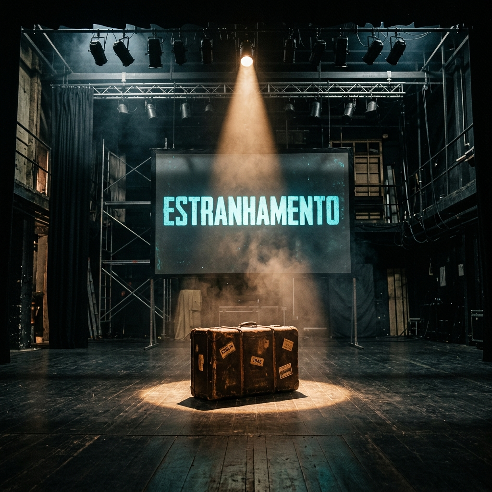
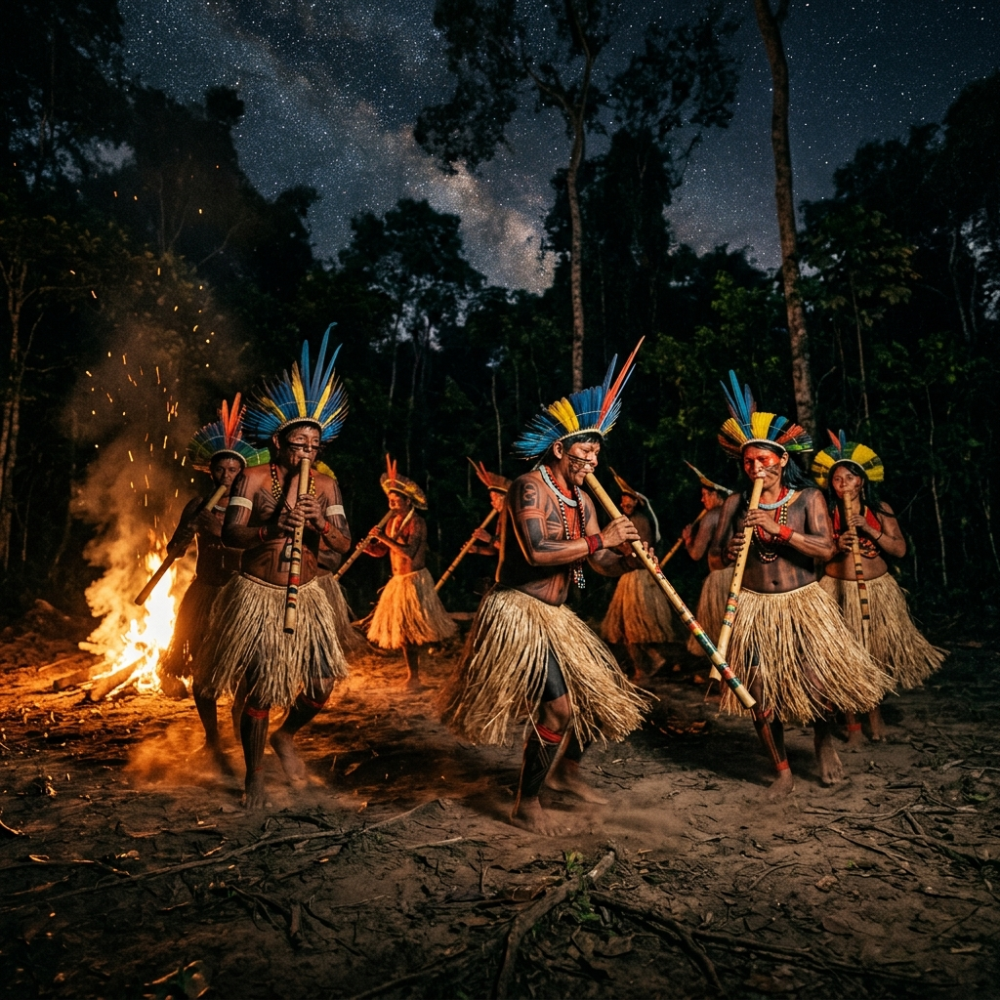
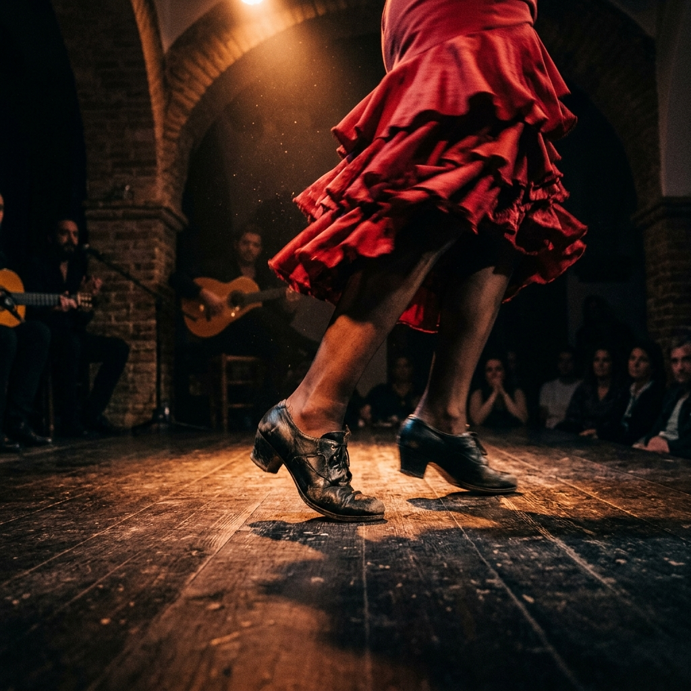

[ ARTE // 3º ANO DO ENSINO MÉDIO ]
Fluxos Culturais
Direitos Humanos, Resistência e Diásporas: Como os deslocamentos forçados e a perseguição de povos redesenharam a arte, a dança e a música ao redor do mundo.
[ Use as Setas ou Espaço para Viajar ]

1. O Direito de Existir
O conceito de refúgio está profundamente atrelado à Declaração Universal dos Direitos Humanos. Segundo a Agência da ONU para Refugiados (Acnur), refugiados são pessoas que se encontram fora de seus países devido a fundados temores de perseguição por raça, religião, nacionalidade, pertencimento a grupo social ou opiniões políticas, ou ainda em razão de graves e generalizadas violações de direitos humanos.
A Declaração Universal de 1948 estabelece marcos cruciais em seus artigos. O Artigo 2 defende a igualdade incondicional de direitos de todos os seres humanos, independentemente de origem ou soberania do país. O Artigo 6 garante que todos têm o direito de ser reconhecidos como pessoas perante a lei, combatendo a invisibilidade jurídica. Já o Artigo 14 assegura o direito de procurar e gozar asilo em outros países quando vítima de perseguição.
A migração forçada arranca o indivíduo de sua estabilidade cotidiana, colocando-o em uma jornada repleta de perigos. Longe de ser uma escolha, o refúgio é um ato extremo de sobrevivência humana. Compreender a dimensão desses deslocamentos ajuda-nos a encarar as fronteiras geopolíticas não apenas como barreiras físicas, mas como divisores de direitos humanos fundamentais.
Hoje existem mais de 100 milhões de pessoas deslocadas à força no mundo.
Garante o direito humano inalienável de buscar asilo e refúgio em solo estrangeiro.

2. Abou: A Criança na Mala
O espetáculo teatral 'Quando eu morrer, vou contar tudo a Deus', do coletivo O Bonde (São Paulo), baseia-se em um fato real ocorrido em 2015: um menino africano de oito anos chamado Abou foi encontrado pela polícia de fronteira da Espanha escondido dentro de uma mala de viagem.
A peça reconstrói poeticamente essa terrível travessia. Dentro do espaço claustrofóbico e escuro da mala, a imaginação e a curiosidade de Abou tornam-se mecanismos de defesa para amenizar a dor e a solidão do deslocamento. A narrativa aborda de frente a crise de refugiados africanos que tentam ingressar na Europa através dos enclaves espanhóis de Ceuta e Melilla, no norte da África.
Ao humanizar a figura do migrante na infância, o grupo O Bonde provoca uma reflexão profunda sobre o Artigo 6 da Declaração dos Direitos Humanos. Abou, ao ser tratado como contrabando em uma mala, tem sua humanidade e direitos básicos negados pelas autoridades de fronteira, demonstrando como a arte atua como ferramenta de denúncia e sensibilização.
Em 2015, o menino Abou, da Costa do Marfim, foi radiografado dentro de uma mala na fronteira espanhola.
Companhia paulista que usa o teatro documentário para dar voz a questões periféricas.

3. Suspender o Céu
A perda de um território tradicional para os povos indígenas é uma violência que vai além da perda geográfica de habitação. Para os povos originários, o território é o espaço sagrado que abriga sua ancestralidade, sua espiritualidade e a própria natureza da qual fazem parte e que molda sua identidade cultural.
Segundo o pensador, líder indígena e imortal da Academia Brasileira de Letras Ailton Krenak, práticas como cantar, dançar e viver a experiência sensível do encontro e do movimento constituem a mágica de 'suspender o céu'. Isso significa expandir o horizonte existencial e situar-se no próprio corpo e vida, contrapondo-se à lógica eurocêntrica e produtivista do consumo.
A Declaração da ONU sobre os Direitos dos Povos Indígenas (Artigo 25) assegura o direito de manter e fortalecer a relação espiritual com suas terras tradicionais. A resistência indígena manifesta-se vigorosamente na preservação dessas práticas ancestrais, como a dança, que resistem ao longo de séculos contra deslocamentos forçados e violência territorial.
Filósofo, ambientalista e ativista, primeiro indígena eleito para a Academia Brasileira de Letras.
Cantar e dançar são tecnologias de sobrevivência e conexão com a Terra.
4. O Ritmo do Cariçu
O cariçu (ou kariçu) é uma dança tradicional de celebração praticada por diversos povos indígenas, com destaque para a etnia Tukano do Alto Rio Negro, no Amazonas. Essa manifestação cultua a vida, a fartura e a união comunitária, sendo tradicionalmente ligada a rituais de casamento e trocas sociais.
A dança é executada em duplas ao som do próprio cariçu, um instrumento de sopro feito de tubos de taquara amarrados com fibras, semelhante à flauta de pã. O andamento da dança inicia suave e vai se intensificando com batidas marcadas dos pés no chão, adornados com tornozeleiras de sementes (chocalhos). As vestimentas incluem cocares, saias de palha, colares e pinturas corporais.
Mesmo sofrendo com a expropriação de suas terras e a necessidade de se deslocarem para centros urbanos, os Tukano mantêm o cariçu vivo. A apresentação dessa dança em ambientes como universidades públicas (por exemplo, na UFSCar) demonstra como esses saberes tradicionais ganham novas formas de circulação, afirmando o espaço do conhecimento indígena na sociedade.
Família linguística e étnica de 17 povos que habitam a bacia do Rio Negro e do Uaupés.
O cariçu é uma flauta de pã de taquara com afinação variável tocada de forma coletiva.

5. Diários de Guerra: Peça N
O espetáculo 'N', criado em 2016 pela Cia Arte-Móvel (Americana, SP), é uma adaptação cênica do célebre livro 'O diário de Anne Frank', publicado originalmente em 1947. A montagem explora o processo de remidiação, transportando a literatura íntima de Anne para a linguagem teatral através de animação de objetos, bonecos e projeções digitais.
A peça reconstrói a trajetória de três pessoas tentando fugir de conflitos armados durante a Segunda Guerra Mundial, traçando um paralelo direto com os milhões de refugiados contemporâneos. A jovem Anne Frank permaneceu oculta dos nazistas em um anexo secreto em Amsterdã por dois anos antes de ser descoberta e morrer no campo de concentração de Bergen-Belsen em 1945.
Ao integrar elementos estéticos, registros históricos e novas tecnologias no palco, a remidiação permite perpetuar e ressignificar a memória da intolerância. O espetáculo convida a plateia a refletir sobre a repetição da história de perseguição de civis inocentes e a importância do acolhimento humanitário.
A transposição de uma obra de seu suporte original (livro) para outro meio (teatro multimídia).
Jovem judia alemã cujo diário tornou-se o maior testemunho pessoal do Holocausto.
6. O Estranhamento Brechtiano
Bertolt Brecht desenvolveu o teatro épico na década de 1920 em oposição direta ao teatro clássico dramático. Enquanto o teatro tradicional buscava a identificação imediata e a ilusão emocional do espectador (catarse), o teatro épico visava criar um distanciamento crítico para estimular a reflexão racional sobre problemas sociais.
Para atingir esse distanciamento, Brecht elaborou o conceito de 'efeito de estranhamento' (Verfremdungseffekt). Ele consistia em tornar o familiar desconhecido, quebrando a ilusão cênica. Recursos como expor a maquinaria técnica (luzes, cenários), interrupções de cenas, uso de narradores comentando os atos, e atores falando diretamente ao público eram empregados.
O musical brasileiro 'Malala, a menina que queria ir para a escola' utiliza essas técnicas de forma brilhante. Durante a representação da luta da jovem paquistanesa contra a opressão extremista, os atores interrompem a ação para dialogar com a plateia sobre os direitos das crianças à educação, transformando o teatro em ferramenta pedagógica direta.
Dramaturgo alemão que precisou se refugiar nos EUA fugindo do nazismo na 2ª Guerra.
Recursos cênicos que quebram a ilusão da peça, convidando o público a pensar e agir politicamente.

7. Latcho Drom: A Boa Viagem
Os povos romani, historicamente referidos pela designação genérica e muitas vezes estereotipada de 'ciganos', iniciaram sua diáspora entre os séculos XIV e XV, partindo do noroeste da Índia (região do Rajastão). Ao migrarem pela Europa e Oriente Médio, fundaram ricos subgrupos culturais, como os Rom, os Sinti e os Calón.
O nomadismo, comumente idealizado de forma romântica como sinônimo de total liberdade e desapego, foi, na verdade, uma tática de sobrevivência em resposta a sucessivas ondas de discriminação, perseguição e políticas de expulsão de vários governos. Estima-se que mais de 500 mil romani foram brutalmente assassinados nos campos de concentração nazistas durante a Segunda Guerra.
O cineasta romani Tony Gatlif retratou essa jornada no documentário 'Latcho Drom' (1993) ('Boa Viagem' na língua romani). Sem diálogos ou narradores, o filme acompanha a trajetória geográfica da diáspora romani guiado exclusivamente pela música, provando a riqueza identitária e a diversidade das diferentes etnias que a compõem.
Estabeleceu a denominação unificada 'Roma', a bandeira oficial e o hino do povo romani.
Conhecido como Porajmos, o extermínio de ciganos pelo regime nazista ainda é pouco discutido.

8. Alma Flamenca e Calón
O flamenco é uma expressão artística secular que une música, dança e canto no sul da Espanha, principalmente na região da Andaluzia. A manifestação resulta de um caldeirão cultural com influências judaicas, árabes e ciganas. A contribuição decisiva para a sua consolidação veio dos romani da etnia Calón, que estruturaram seus principais ritmos.
Originalmente confinado aos bairros marginalizados de Sacromonte (Granada) e Triana (Sevilha), o flamenco desenvolveu seus diversos ritmos dramáticos e festivos (os 'palos'). A sonoridade se apoia no som marcante do sapateado dos dançarinos, da guitarra flamenca (violão flamenco), palmas percussivas ritmadas (palmeado) e castanholas.
O canto, chamado 'cante jondo' (canto profundo), é caracterizado pela sua alta dramaticidade, potência vocal e uso de melismas (várias notas rápidas cantadas em uma única sílaba), o que revela a influência árabe direta. A cantaora Estrella Morente, de ascendência Calón, destaca-se internacionalmente ao manter viva essa tradição expressiva.
O canto tradicional andaluz que expressa sentimentos trágicos de dor e perseguição histórica.
Artista de linhagem Calón que gravou 'Peregrinitos' e participou do filme 'Volver' de Almodóvar.

9. O Legado Romani no Brasil
A presença romani no Brasil remonta ao início da colonização no século XVI, impulsionada pelo degredo imposto pelas coroas ibéricas que baniram ciganos Calón de suas terras. Esses grupos adaptaram sua cultura ao longo das gerações no país, desenvolvendo uma variante da língua original (o chibi-caló). Outras levas das etnias Rom e Sinti migraram no século XX.
Os romani exerceram um papel crucial no entretenimento popular brasileiro, chegando ao país associados a companhias de circo itinerantes, como a notável família Sbano. Artistas ciganos ou descendentes também conquistaram as telas nacionais, a exemplo de Dedé Santana (Os Trapalhões) e da atriz Ana Rosa. Na música, muitos Calón se identificaram com o sertanejo, como a jovem dupla de irmãos Miguel e Nycolas.
Hoje, com uma população estimada em 2 milhões de pessoas, os ciganos no Brasil enfrentam sérias dificuldades de segregação, preconceito e falta de acesso a direitos básicos como saúde e educação itinerante. Jovens influencers como Jade Kalín e Jussiara Vieira usam as redes sociais como trincheiras digitais para combater visões caricatas e místicas sobre o seu povo.
Ciganos Calón foram deportados como degredados no século XVI por leis de banimento de Portugal.
Influenciadores romani usam redes para desmitificar estereótipos propagados por novelas de TV.
FIM
Fluxos Culturais
"A arte de um povo é o seu território espiritual. Nenhuma fronteira pode confiscá-la."
Prof. Kelso Palheta // Arte